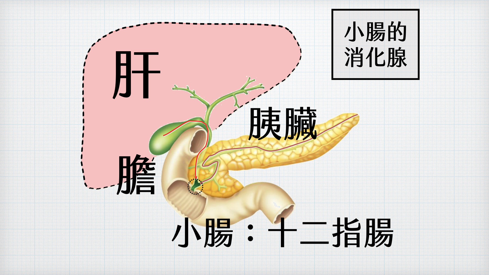

4 小腸
小腸是一條長管狀的器官，盤繞在腹腔中，是分解食物以及吸收養分、水分的主要場所。
▌小腸的消化作用
肝臟所分泌的膽汁，和胰臟所分泌的胰液可藉著導管被送入小腸內。當食物進入小腸時，儲存在膽囊的膽汁會經由導管送入小腸，膽汁中雖不含消化酵素，但可將脂質變成顆粒較小的脂肪球（此過程稱為乳化），有利於胰液中脂質酵素進行脂質分解。
胰液內所含的酵素則有助於醣類、蛋白質和脂質的分解。另外小腸壁上的腸腺也會分泌腸液，小腸內的酵素主要和消化醣類、蛋白質有關。
